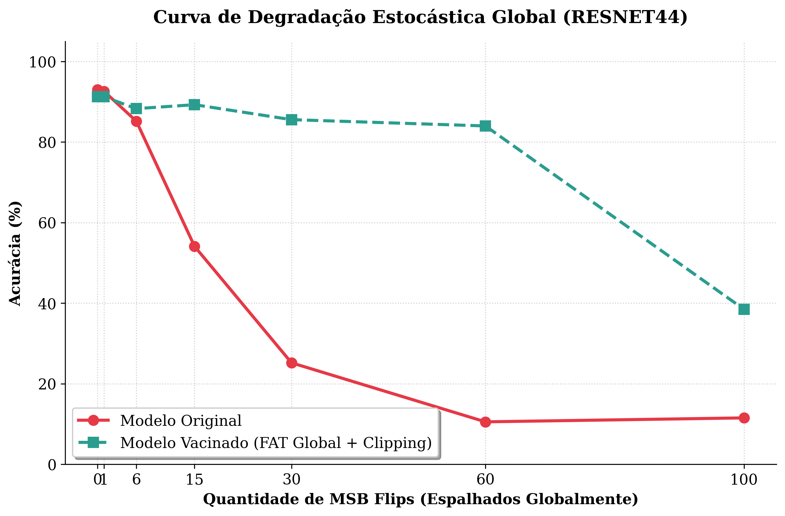
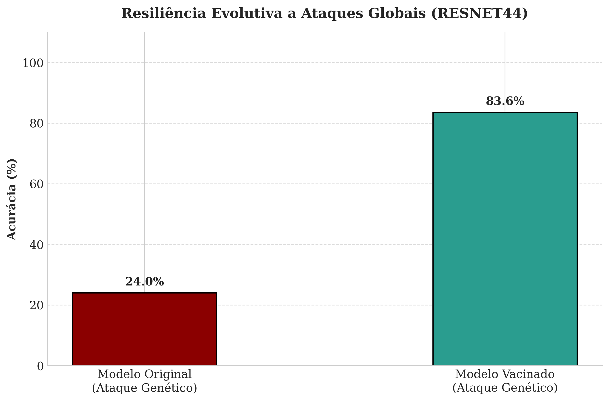

Acompanhamento de Pesquisa
Slide 1 / 18
Experimento 4: ResNet-44
Curva de Colapso (Stress)

Teste Genético (AG Prune)

Histograma da Rede

ResNet-44: Histograma da Rede
Utilize as setas do teclado (Esquerda/Direita) para navegar.